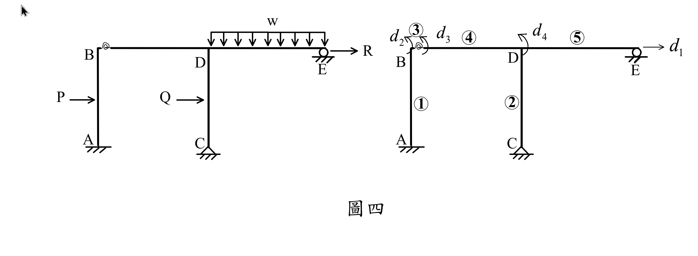

考題編號：SA-2019-4
主分類： SA-U4-1 矩陣位移法
標籤： 勁度矩陣 半剛性接頭 旋轉彈簧 節點載重向量
1. 原始題目重述 (Problem Restatement)
四、考慮圖四之構架，假設各構件之軸向變形很小可以忽略，各桿件之楊氏模數都為 E、斷面二次矩都為 I 且長度都為 L；外力 P 及 Q 作用於柱之中點。如圖四所示，梁 BD 接到柱 AB 採半剛性接頭，以旋轉彈簧模擬之（可當作零長度），旋轉彈簧勁度假設為 10 EI/L（EI，L 為梁、柱構件性質）。若以勁度法表示該構架平衡方程式，可寫為 [K]{D} = {P}，其中{D}為位移向量，依序包括水平位移 $d_1$、B 點左側旋轉角 $d_2$、B 點右側旋轉角 $d_3$ 及 D 點旋轉角 $d_4$ 共四個自由度；[K]為結構勁度矩陣；{P}為外力向量。試求[K]及{P}；求[K]前，先寫出每個元素之勁度矩陣再組合得[K]，旋轉彈簧視為一個元素。（25 分）

圖說：(待補充說明)
2. 考題核心精神與出題者意圖 (Core Concepts & Examiner's Intent)
本題為標準的直接勁度法 (Direct Stiffness Method) 操作題。
考驗學生是否能將結構拆解為離散元素，寫出各元素的局部勁度矩陣，並透過自由度 (DOFs) 的對應關係組裝成全域勁度矩陣 $[K]$。
特別加入了「旋轉彈簧」與「靜定外伸端 (梁 DE)」的處理：
- 旋轉彈簧：作為連接兩個旋轉自由度 ($d_2, d_3$) 的元素，其勁度直接反映在矩陣的對角線與非對角線元素上。
- 節點等效載重向量 $\{P\}$：測驗學生將桿件上的載重 (點載重 P、Q，均佈載重 w) 轉換為固端彎矩與固端剪力，再反號成為節點等效載重的能力。
- 靜定端靜態凝聚 (Static Condensation)：右側 E 點為滾支承且未配給旋轉自由度，因此 DE 梁必須使用「修正勁度矩陣 ($3EI/L$)」來組裝。
3. 解題戰略地圖與陷阱分析 (Strategic Roadmap & Trap Analysis)
- 確立自由度 (DOFs)：
- 題目已指定 $\{D\} = [d_1, d_2, d_3, d_4]^T$。
- $d_1$：全構架水平側移 (向右為正)。
- $d_2$：B 點柱端 (彈簧左側) 旋轉 (順時針為正)。
- $d_3$：B 點梁端 (彈簧右側) 旋轉 (順時針為正)。
- $d_4$：D 點旋轉 (順時針為正)。 - 元素拆解與局部勁度矩陣 $[k^{(e)}]$：
- (1) 柱 AB：對應 DOF $[d_1, d_2]^T$。
- (2) 柱 CD：對應 DOF $[d_1, d_4]^T$。
- (3) 彈簧 B：對應 DOF $[d_2, d_3]^T$。
- (4) 梁 BD：對應 DOF $[d_3, d_4]^T$。
- (5) 梁 DE：對應 DOF $[d_4]^T$ (E 端鉸接，使用 $3EI/L$)。 -
組裝全域勁度矩陣 $[K]$：
依據各元素的 DOF 標籤，將係數累加至 $4 \times 4$ 的 $[K]$ 矩陣對應位置。 -
計算節點載重向量 $\{P\}$：
$\{P\} = \{P_{direct}\} - \{FEM_{equivalent}\}$
- $P_1$：側移自由度。由水平直接外力 $R$ 加上柱 AB、CD 的固端水平剪力轉換而來。
- $P_2 \sim P_4$：由桿件上的載重產生的固端彎矩 (FEM) 反號求得。
4. 步驟化詳細計算過程 (Step-by-Step Detailed Calculation)
Step 1：寫出各元素之勁度矩陣
依題意，所有桿件長度皆為 $L$，勁度為 $EI$。忽略軸向變形，並令所有順時針旋轉與向右位移為正。
1. 元素 (1) - 柱 AB
包含自由度：$[d_1, d_2]^T$ (A 端固定)
$$[k^{(1)}] = \begin{bmatrix}
\frac{12EI}{L^3} & -\frac{6EI}{L^2} \\
-\frac{6EI}{L^2} & \frac{4EI}{L}
\end{bmatrix}$$
2. 元素 (2) - 柱 CD
包含自由度：$[d_1, d_4]^T$ (C 端固定)
$$[k^{(2)}] = \begin{bmatrix}
\frac{12EI}{L^3} & -\frac{6EI}{L^2} \\
-\frac{6EI}{L^2} & \frac{4EI}{L}
\end{bmatrix}$$
3. 元素 (3) - 旋轉彈簧
包含自由度：$[d_2, d_3]^T$，彈簧常數 $k_s = \frac{10EI}{L}$
$$[k^{(3)}] = \begin{bmatrix}
k_s & -k_s \\
-k_s & k_s
\end{bmatrix} = \begin{bmatrix}
\frac{10EI}{L} & -\frac{10EI}{L} \\
-\frac{10EI}{L} & \frac{10EI}{L}
\end{bmatrix}$$
4. 元素 (4) - 梁 BD
包含自由度：$[d_3, d_4]^T$
$$[k^{(4)}] = \begin{bmatrix}
\frac{4EI}{L} & \frac{2EI}{L} \\
\frac{2EI}{L} & \frac{4EI}{L}
\end{bmatrix}$$
5. 元素 (5) - 梁 DE
包含自由度：$[d_4]^T$ (右端 E 為滾支承，且未賦予旋轉自由度，需使用修正勁度)
$$[k^{(5)}] = \begin{bmatrix} \frac{3EI}{L} \end{bmatrix}$$
Step 2：組合結構勁度矩陣 $[K]$
將各局部矩陣疊加至 $4 \times 4$ 之全域矩陣：
$$[K] = \frac{EI}{L} \begin{bmatrix}
\frac{12}{L^2} + \frac{12}{L^2} & -\frac{6}{L} & 0 & -\frac{6}{L} \\
-\frac{6}{L} & 4 + 10 & -10 & 0 \\
0 & -10 & 10 + 4 & 2 \\
-\frac{6}{L} & 0 & 2 & 4 + 4 + 3
\end{bmatrix}$$
整理可得：
$$[K] = \frac{EI}{L} \begin{bmatrix}
\frac{24}{L^2} & -\frac{6}{L} & 0 & -\frac{6}{L} \\
-\frac{6}{L} & 14 & -10 & 0 \\
0 & -10 & 14 & 2 \\
-\frac{6}{L} & 0 & 2 & 11
\end{bmatrix}$$
Step 3：計算外力向量 $\{P\}$
$\{P\}$ 為等效節點載重向量，等於直接作用於節點之載重，減去桿件固端反力 (Fixed End Actions)。
-
水平自由度 $d_1$ 對應之載重 $P_1$：
- 節點直接外力：$R$ (向右)。
- 柱 AB 受點載重 P，A、B 兩端之固端水平剪力皆為 $P/2$ (向左，以抵抗外力)。等效節點載重為反向，即 $+P/2$。
- 柱 CD 受點載重 Q，等效節點載重為 $+Q/2$。
$$P_1 = R + \frac{P}{2} + \frac{Q}{2}$$ -
旋轉自由度 $d_2$ 對應之載重 $P_2$：
- 柱 AB 中央受向右力 P，B 端固端彎矩為順時針 $FEM_{BA} = +PL/8$。
- 等效節點載重為反號：
$$P_2 = -\frac{PL}{8}$$ -
旋轉自由度 $d_3$ 對應之載重 $P_3$：
- 梁 BD 受向下均佈載重 w，左端 B 之固端彎矩為逆時針 $FEM_{BD} = -wL^2/12$。
- 等效節點載重為反號：
$$P_3 = \frac{wL^2}{12}$$ -
旋轉自由度 $d_4$ 對應之載重 $P_4$：
- 柱 CD 頂端之固端彎矩：$FEM_{DC} = +QL/8$ (順時針)。
- 梁 BD 右端之固端彎矩：$FEM_{DB} = +wL^2/12$ (順時針)。
- 梁 DE 無載重。
- 等效節點載重為反號：
$$P_4 = -\left(\frac{QL}{8} + \frac{wL^2}{12}\right)$$
答：
$$[K] = \frac{EI}{L} \begin{bmatrix}
\frac{24}{L^2} & -\frac{6}{L} & 0 & -\frac{6}{L} \\
-\frac{6}{L} & 14 & -10 & 0 \\
0 & -10 & 14 & 2 \\
-\frac{6}{L} & 0 & 2 & 11
\end{bmatrix}, \quad \{P\} = \begin{Bmatrix}
R + \frac{P+Q}{2} \\
-\frac{PL}{8} \\
\frac{wL^2}{12} \\
-\frac{QL}{8} - \frac{wL^2}{12}
\end{Bmatrix}$$